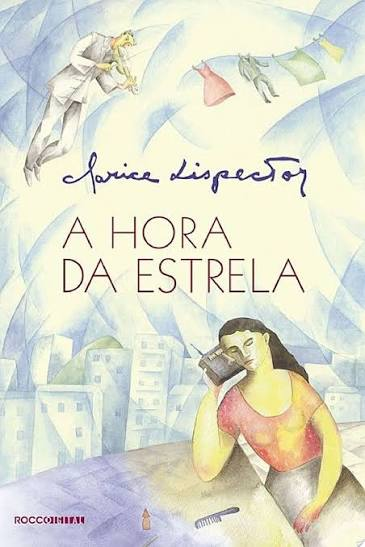
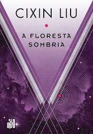

A Hora da Estrela
Clarice Lispector
A Hora da Estrela é um romance literário da escritora brasileira Clarice Lispector. O romance narra a história da datilógrafa alagoana, Macabéa, que migra para o Rio de Janeiro, tendo sua rotina narrada por um escritor fictício chamado Rodrigo S.M.
Saiba mais

A Floresta Sombria
Liu Cixin.
A Floresta Sombria é um romance de ficção científica de 2008 do escritor chinês Liu Cixin. É a sequência do romance vencedor do Prémio Hugo O Problema dos Três Corpos, na trilogia intitulada Lembranças do Passado da Terra, que os leitores chineses geralmente referem-se à série pelo título do primeiro romance.
Saiba mais